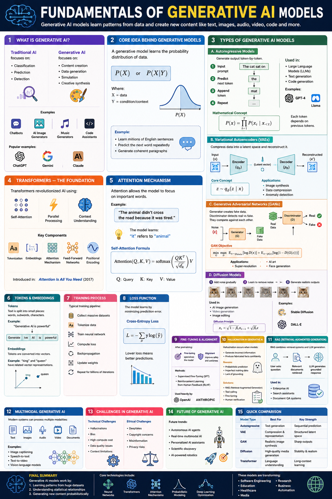

A comprehensive, interactive study guide covering all core concepts you need to master for the CGAI certification.
P(X) or P(X|Y) — and can sample new instances from that distribution. The model doesn't just categorise; it creates.
| Model Type | Core Mechanism | Best For | Key Strength | Examples |
|---|---|---|---|---|
| Autoregressive | Predict next token, one at a time | Sequential prediction | Long-form coherent text | GPT-4, Llama, Claude |
| VAE | Encode → latent space → decode | Compression & generation | Structured latent space | β-VAE, VQ-VAE |
| GAN | Generator vs. Discriminator game | Realistic image synthesis | Sharp, photorealistic outputs | StyleGAN, CycleGAN |
| Diffusion | Add noise then denoise iteratively | High-quality media generation | Stability & photorealism | DALL-E, Stable Diffusion |
| Transformer | Self-attention over all positions | Language understanding | Long-context learning | GPT-4, BERT, T5 |
👆 Click any step to expand its details and worked example.
The foundation of any generative model is data. Models like GPT-4 are trained on hundreds of billions of tokens sourced from web crawls (Common Crawl), books, Wikipedia, code repositories, and curated datasets. Data quality is as important as quantity — noise and biases in data directly affect model behaviour.
Raw text is split into tokens — subword units using algorithms like Byte-Pair Encoding (BPE) or WordPiece. Each token maps to a unique integer ID in the model's vocabulary. Images are "tokenised" as patches; audio as spectrograms.
The model (typically a Transformer) processes token sequences through multiple layers of self-attention and feed-forward networks. For language models, the objective is next-token prediction: given tokens 1…n, predict token n+1. Gradients are computed via backpropagation.
The Cross-Entropy Loss measures how wrong the model's predictions are compared to the true labels. Lower loss = better predictions. The formula is:
The loss is propagated backwards through the network using the chain rule of calculus. Each parameter (weight) receives a gradient telling it which direction to move to reduce loss. Optimisers like Adam use these gradients with momentum and adaptive learning rates.
Billions of parameters are nudged slightly in the direction that reduces loss. A single forward + backward pass over a mini-batch constitutes one iteration. One full pass through the dataset is an epoch. Pre-training runs for hundreds of thousands of steps across thousands of GPUs.
The cycle of forward pass → compute loss → backprop → update is repeated billions of times. Convergence is tracked via validation loss. Techniques like learning rate schedules, gradient clipping, and mixed-precision training keep the process stable at scale.
| Step | Action | Example |
|---|---|---|
| 1. Input Prompt | Provide starting context | "The cat sat on" |
| 2. Predict Next Token | Model outputs probability over vocab | P("the")=0.45, P("a")=0.22… |
| 3. Append Token | Sample or argmax the top prediction | "the" appended → "The cat sat on the" |
| 4. Repeat | Feed extended sequence back in | "mat" → "The cat sat on the mat" |
Click any word below to see what the model "attends to" when processing it:
| Type | What it Attends Over | Used In | Example |
|---|---|---|---|
| Self-Attention | All positions in the same sequence | Encoder, Decoder | Word → word relationships |
| Cross-Attention | Encoder output from decoder position | Seq2Seq decoders | Translation: source ↔ target |
| Causal/Masked | Only previous positions (no future) | GPT-style autoregressive | Next-token prediction |
| Flash Attention | Same as self-attention (optimised) | Modern LLMs | Memory-efficient long contexts |
| Architecture | Attention | Best For | Examples |
|---|---|---|---|
| Encoder-only | Bidirectional (sees all tokens) | Classification, NLU | BERT, RoBERTa |
| Decoder-only | Causal/masked (left-to-right) | Generation, completion | GPT-4, Claude, Llama |
| Encoder-Decoder | Both + cross-attention | Translation, summarisation | T5, BART, Whisper |
Tokens are the fundamental units of text for a language model — subwords, words, or characters depending on the tokeniser. The vocabulary maps each token to an integer ID.
Embeddings convert token IDs into dense real-valued vectors. The famous example: "king" − "man" + "woman" ≈ "queen" — vectors encode semantic relationships. Embedding dimensions range from 512 (small models) to 12,288 (GPT-4).
Cross-Entropy Loss: L = −Σ y · log(ŷ). Measures the difference between the model's predicted probability distribution and the true distribution (one-hot). Lower loss = better calibrated predictions.
Perplexity = exp(cross-entropy loss). A perplexity of 10 means the model is as "confused" as if choosing uniformly between 10 options. Lower perplexity = better language model.
After pre-training on massive datasets, models are adapted to specific tasks and human preferences:
Hallucination occurs when the model generates factually incorrect or fabricated information with apparent confidence. Root causes:
Mitigations: RAG (retrieval-augmented generation), tool use, chain-of-thought, fine-tuning on factual datasets, human-in-the-loop verification.
RAG combines a retrieval system (vector database + semantic search) with a generative LLM. When a query arrives, relevant documents are fetched and injected into the prompt — grounding the LLM in current, verified information.
Modern systems can process and generate across multiple modalities — text, images, audio, video, documents — in a unified framework. This is achieved by:
Applications: Image captioning, speech-to-text, text-to-video (Sora), vision-language models (GPT-4V, Gemini).
The canonical reference diagram for the CGAI Fundamentals module. Each numbered section corresponds to a major topic area.

This infographic consolidates all 15 major topic areas of the CGAI Fundamentals module in a single visual: from the basic definition of generative AI (Section 1) through to the quick comparison table of model types (Section 15). When studying, pay particular attention to: Section 3 (the four model types A–D and their mathematical formulations), Section 5 (the self-attention formula with Q, K, V labels), and Section 11 (the RAG pipeline diagram showing how retrieval connects to the LLM). These are the most frequently tested sections. Note how each model type (Autoregressive, VAE, GAN, Diffusion) has a distinct architecture diagram — being able to identify these visually is an exam skill.
Look for the token-by-token prediction chain and the product notation formula P(x) = Π P(xₜ|x<t). Each output becomes input to the next step.
Note the Encoder → Latent Vector → Decoder flow. The key equation z ~ qφ(z|x) shows latent sampling. Reconstructed output is x'.
The adversarial minimax objective is shown. Generator G maps Noise z → Fake Data. Discriminator D classifies Real vs Fake.
The cat-image sequence shows the forward (noise) and reverse (denoise) processes. The diffusion principle formula xₜ = √(1−βₜ)xₜ₋₁ + √βₜ ε is key.
The sentence example "it refers to animal" illustrates coreference resolution. The formula Attention(Q,K,V) = softmax(QKᵀ/√dₖ)V is shown with all variables labelled.
The RAG flow: User → Relevant Documents Retrieved → LLM generates grounded response. Used in enterprise AI and document QA systems.